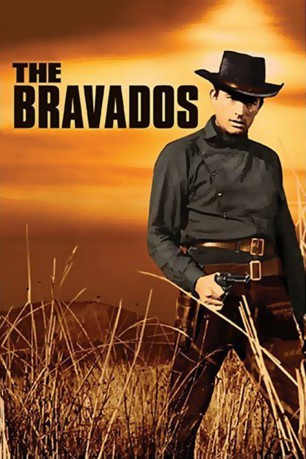
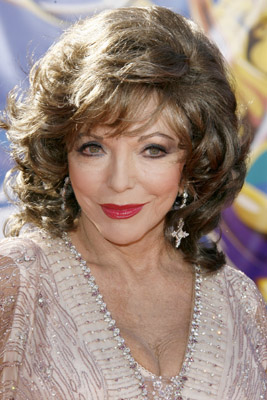

#6252 Bravados
Alternativ: The Bravados
 
 IMDB-Wertung: 7.0 / 10
IMDB-Wertung: 7.0 / 10  Metascore: 0
Metascore: 0 
Der wortkarge Farmer Jim Douglas kommt in die Stadt Rio Arriba, wo am nächsten Tag vier Verbrecher hingerichtet werden sollen. Er ist überzeugt davon, dass es die Mörder und Vergewaltiger seiner Frau sind und will ihren Tod miterleben. Doch kurz vor der Exekution gelingt den Schurken die Flucht. Jim nimmt die Verfolgung auf, eine mörderische Jagd zur mexikanischen Grenze beginnt. Ohne Erbarmen tötet er drei der Banditen, die bis zuletzt ihre Unschuld beteuern. Als er am Ende auch den letzten in seine Gewalt bekommt, erwartet ihn eine grausige Erkenntnis.
Jahr: 1958
Dauer: 97 Minuten
FSK: 12
Land: USA Studio: Twentieth Century-Fox Film CorporationTonspuren:
Untertitel:
Auflösung: 1080p (1920x800) Größe: 7833 MB
Genre: Drama, Western
Regisseur: Henry King
Drehbuch: Frank Hannah
Soundtrack:
Darsteller:
 Gregory Peck als Jim Douglass
Gregory Peck als Jim Douglass-  Joan Collins als Josefa Velarde
- Stephen Boyd als Bill Zachary
 Albert Salmi als Ed Taylor
Albert Salmi als Ed Taylor Henry Silva als Lujan
Henry Silva als Lujan- Barry Coe als Tom
- George Voskovec als Gus Steinmetz
- Herbert Rudley als Sheriff Sanchez
 Lee Van Cleef als Alfonso Parral
Lee Van Cleef als Alfonso Parral- Andrew Duggan als Padre
- Gene Evans als John Butler
 Robert Adler als Tony Mirabel , uncredited
Robert Adler als Tony Mirabel , uncredited- Joe DeRita als Mr. Simms , uncredited
- Juan García als Deputy Sheriff Guarding the Pass , uncredited
- Jason Wingreen als Hotel Clerk , uncredited
- Kathleen Gallant als Emma Steinmetz
- Ken Scott als Primo - Deputy Sheriff
- Ninos Cantores de Morelia Choral Group als Themselves
- Beulah Archuletta als Mexican Waitress , uncredited
- Ada Carrasco als Sra. Parral , uncredited
- Alicia del Lago als Ángela Luján , uncredited
- Jacqueline Evans als Mrs. Barnes , uncredited
- María Gracia als Helen - Jim Douglass' daughter , uncredited
- Robert Griffin als Banker Loomis , uncredited
- Kay Koury als Waitress , uncredited
- Jack Mather als Quinn - Blacksmith , uncredited
Datei: X:\HD-Western-1900-1959\Bravados (1958, FSK12, 1920x800).mkv seit 23.05.2017
Festplatte: HD Eastern+Western
 Es gibt insgesamt 98 Filme in der Gruppe 'HD-Western-1900-1959'
Es gibt insgesamt 98 Filme in der Gruppe 'HD-Western-1900-1959'